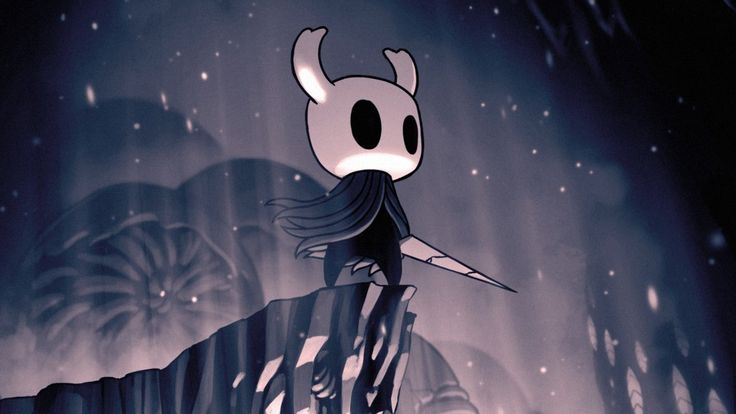
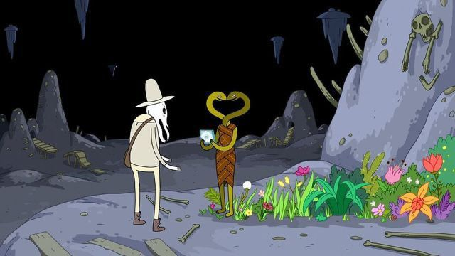

A inspiração em Hollow Knight para a criação de Limbo Souls vai muito além da estrutura do mapa. Ela reside na construção de um mundo que "respira" melancolia, onde o silêncio e o design visual contam a história tanto quanto o diálogo.

Para os fans de Hora de aventura a inspiração no Reino da morte e no Reino da vida são claras, já que ambos possuem elementos parecidos, como o reino da morte sendo cinza e melancolico e o reino da vida mais colorido, ambos sendo opostos